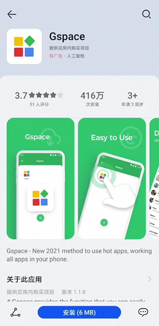

Gspace 快问快答：一个能装谷歌全家桶又能双开微信的容器
整理了关于 Gspace 的九组高频问答——华为手机没 GMS 能不能用、双开稳不稳定、鸿蒙通知怎么保活、银行 App 为什么不行，看完直接上手。
整理一篇关于 Gspace 的快问快答，把社区里出现频率最高的问题一次性说清。
Gspace 到底是什么
一个装在安卓手机上的"虚拟容器"，它的官网上对容器原理有详细说明——你可以把它理解成手机里的第二个系统——容器里自带完整的谷歌服务框架、Play 商店和 Play 服务，同时也能克隆任何已装过的应用。在容器内启动的应用，看到的是一套完整的 GMS 环境，检测不到"缺谷歌服务"就正常运行了；克隆出来的应用实例则拥有独立的账号和数据，跟主系统互不干扰。
谁需要装 Gspace
两类人，两类场景，互不排斥。第一类是华为、荣耀等无 GMS 设备用户——出厂就不带谷歌移动服务，直接装 Gmail、YouTube、Google Maps 会闪退，Gspace 把 GMS 装进容器后这些应用就能跑起来。第二类是所有安卓用户，想在同一台设备上同时登录两个微信、两个 Telegram、两个游戏账号，系统自带的双开只能覆盖少数几款应用，Gspace 的容器几乎能克隆任何东西。一台华为手机可以同时用 Gspace 装 Gmail（恢复谷歌生态）和克隆微信（双开工作号），两种场景一起开。
华为手机装 Gspace 麻烦吗
比普通安卓多一个前置步骤——改应用市场的国家/地区。华为应用市场在国内默认只上架国内应用，Gspace 发布在海外区域，所以得先把地区切到英国、德国或任何一个海外地区；普通安卓设备则可以直接从官方下载获取安装包。改地区会清除绑定的银行卡、支付密码和小额免密支付，另外如果开了华为会员的家人共享功能，必须先在系统设置里关掉，否则改地区会报错。改完装好 Gspace 之后，随时可以改回中国——Gspace 安装在主系统上，和应用市场地区无关，改回来只影响应用市场的搜索范围，Gspace 本身不受任何影响。

容器内应用的数据和主系统是分开的吗
四层隔离机制，几乎等于两套独立的手机。账号隔离：容器内登录的微信账号 B 和主系统的账号 A 互不干扰，会话列表互相看不到。文件系统隔离：容器内微信收到的图片、下载的文件都存在容器专属存储里，主系统的相册和文件管理器默认读不到。进程隔离：容器内应用崩溃只影响容器进程，主系统不受影响。卸载清除：卸载 Gspace 主程序时，容器内所有应用、账号、文件、缓存一次性清空，主系统内容完全不受影响。
鸿蒙系统下 Gspace 收不到通知怎么办
鸿蒙的后台管理比原生安卓激进得多，Gspace 作为一个"壳"，被杀掉后容器内所有应用的推送通道也就断了。Gspace文档里对不同鸿蒙版本的后台设置差异有专门章节，三重保障基本能解决：第一重，应用启动管理设为手动，关闭自动管理后弹出的三个开关（允许自启动、允许关联启动、允许后台活动）全部打开——这是最关键的一步。第二重，锁定后台应用卡片，打开最近任务视图找到 Gspace 卡片，向下滑动一下出现锁图标，锁定后不会被一键清理杀掉。第三重，鸿蒙 4/5 部分机型需要额外把 Gspace 加到电池优化白名单。设置完启动 Gspace 让它跑一会儿再切回桌面，不要手动杀后台，等有新消息看能不能收到。
银行 App 为什么在容器里打不开
这不是 Gspace 的问题。银行和支付类应用在启动时会做设备完整性检测（SafetyNet / Play Integrity API）、系统签名验证、Root/模拟器/容器环境检测，检测到 Gspace 属于非原生环境就主动拒绝运行。这意味着不要在 Gspace 里装银行 App——装上大概率用不了。Google Pay 和 NFC 支付也不可用，技术上容器内没有 NFC 硬件模拟。银行卡余额查询等敏感操作还是回到主系统的银行 App 里做。
改应用市场地区有什么坑
三个常见坑。第一，家人共享没关导致改地区时报错——这是华为会员中心的功能，要去系统设置里点自己的华为账号头像找家人共享关闭。第二，改完地区应用市场卡在加载界面——杀掉后台后清缓存：设置 → 应用 → 应用市场 → 存储 → 清除缓存，重新打开就好。第三，改地区清除支付信息后忘了重绑——装完 Gspace 改回中国后记得在应用市场里重新绑定银行卡。另外改地区后部分国内应用可能搜不到了，因为它们只在国内区上架，这个不影响已经装好的应用。
容器内的数据怎么备份
容器内的数据对主系统默认隐藏，没有一键导出入口。重要文件建议在容器内用云盘同步（Google Drive、OneDrive 都行）。聊天记录用各应用自身的迁移功能——微信和 Telegram 都支持容器版和主系统版之间互相迁移聊天记录。如果打算卸载 Gspace 又不想丢数据，提前在容器内各应用里各自备份（每个应用方式不同），卸载 Gspace 会一次性清除容器内所有内容。
Gspace 安全吗
Gspace 官方声称不收集任何用户个人数据、不追踪行为、不读取容器外的系统信息。但有一点要注意：第三方修改版的 Gspace 安全性无法保证，只从可信渠道获取。数据隔离机制本身就是一道隐私屏障——从主系统角度看，容器内的数据几乎等于不存在。唯一需要警惕的是银行、支付、敏感操作都放回主系统做，不要指望容器能提供设备完整性。
最后一句：华为/荣耀用户想恢复谷歌生态的必装，有双开需求的普通安卓用户也值得一试，两个场景可以同时用，零冲突。相关资料在 GitHub、Gitee、GitCode 三个仓库都有备份，国内访问选 Gitee 或 GitCode 更顺。